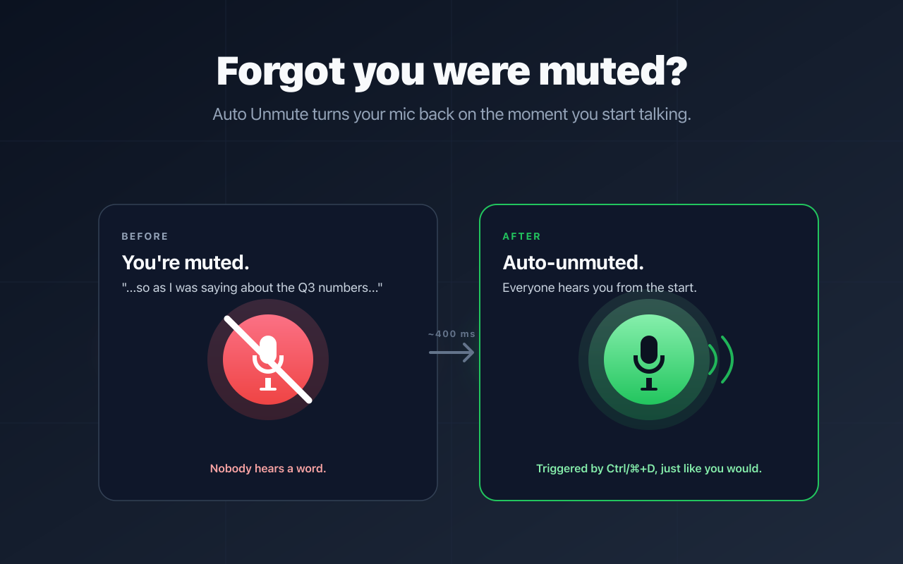
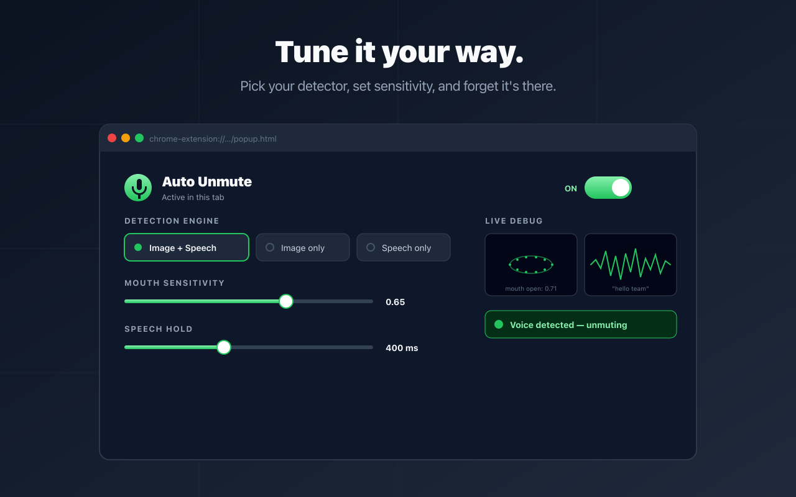
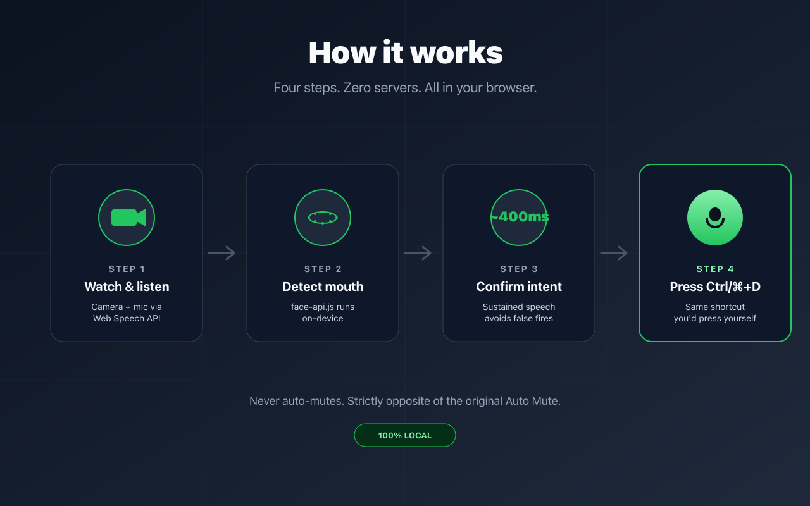
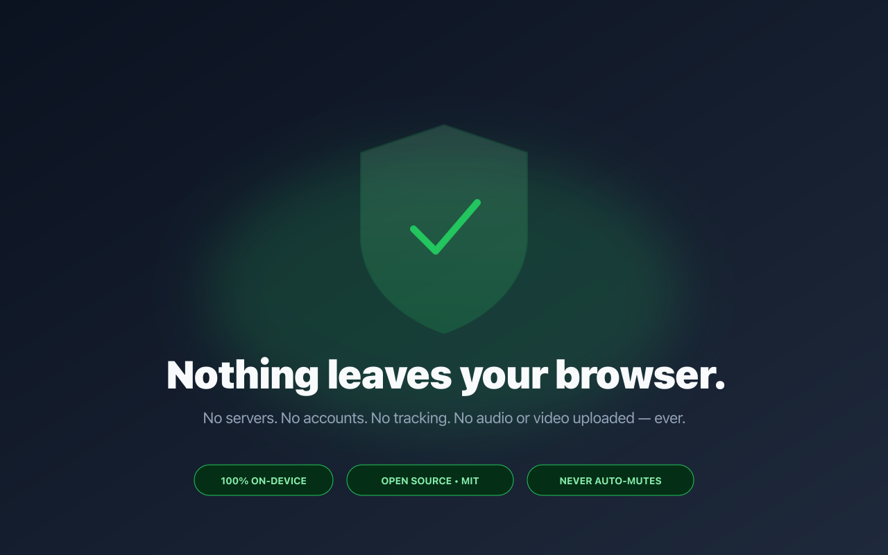

Auto Unmute for Google Meet
Auto Unmute watches for voice onset while you're muted in Google Meet, then unmutes automatically. It never auto-mutes you.




How it works
- Runs a fast local audio-level detector (AudioWorklet RMS) plus optional camera mouth detection (MediaPipe Face Landmarker) and optional Web Speech signal.
- When sustained speech is detected while muted, it toggles your mic using Meet's own control path (mic button click first, hotkey fallback).
- Never re-mutes you on its own. Only you decide when to mute again.
- 100% local extension processing. No analytics, telemetry, or server-side pipeline.
Install
- Install directly from the Chrome Web Store.
- Or load unpacked: download the ZIP from the latest release, unzip, then visit
chrome://extensions-> enable Developer mode -> Load unpacked.